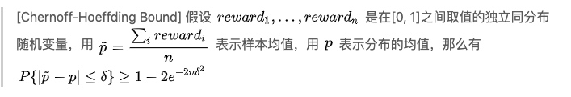

1. 模型融合
通过各种方法比如基于内容的，矩阵分解的等产生推荐结果后。每一种算法都会产生一些推荐结果，如何将推荐结果合并，做一个整体的排序？
一般是使用LR或者决策树的方式
2.FM
wise & deep 模型
google 2016
原理篇——MAB问题
多臂赌博机问题： 假设一个用户对不同类别的内容感兴趣程度不同，当推荐系统初次见到这个用户时，怎么快速地知道他对每类内容的感兴趣程度？这也是推荐系统常常面对的冷启动问题。 EE问题
bandit算法系列
参考：https://zhuanlan.zhihu.com/p/32335683
(1) epsilon-greedy
- 每次来了一个新客人后，以e的概率进行探索。从N道菜中随机选择一个让客人吃，然后根据反馈更新概率\((p_1,p_2,...p_N)\)
- 以1-e的概率利用，从N道菜中选择概率最高的一个推荐给用户
问题，上面的两个步骤对应着的两个问题
- 不管和好结果还是差结果，其在探索的时候概率都是一样的，这是不公平的
- 直接依据概率选择，会存在因为次数不同导致的置信度问题
（2）UCB
考虑推荐中某个阶段，我们有对各个物品偏好的估计\((p_1, p_2, ...p_N)\)以及每个物品被估计的置信次数。那么下一次推荐时候如何考虑概率以及置信度呢？
我们知道，样本估计与真值之间是存在误差的，即\(\hat p - △<= p <= \hat p + △\), 这里用置信上限作为其概率的估计
注意：当实验次数较少的时候，置信区间会比较大，即让少出现的物品多出现一些。从而解决了epsilon-greedy会出现的两个问题
△估计问题：

当\(\delta =\sqrt{2lnT/n}\) 时候，简化有
\[P{|\hat p - p|<=\sqrt{2lnT/n}}>= 1-\frac{2}{T^4}\]
zzz: 直接用比例的置信区间
\(△=z_{\alpha/2}\sqrt{p(1-p)/n}\)。 令\(2e^{-2n\sigma^2}=\alpha=5%\)。可以推算出来，在5%置信度下
UCB边界是\(\sqrt{1.844/n}\),而比例的置信区间是\(1.96\sqrt{p(1-p)/n}\)。即比例的置信区间求解出来的△要偏小一些。
（3）Thompson Sampling
UCB的缺点是:无法融合先验知识。 UCB是频率学派的方法，而Thompson Sampling是贝叶斯学派的
\[p(\theta|X)=p(X|\theta)p(\theta)\]
其中先验\(p(\theta)\)选择为\(Beta(\alpha, \beta)\)分布